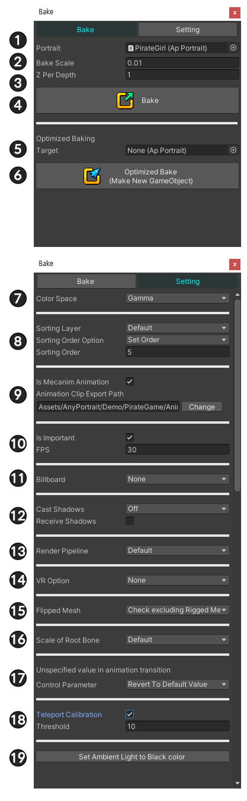

AnyPortrait > Manual > Bake Dialog
Bake Dialog
1.4.0

As of v1.1.0, the UI of the Bake dialog has been partially changed.
When you press the Bake button at the top of the screen, the Bake dialog box appears.
At the top of the dialog are the Bake tab and the Setting tab.
The Settings tab contains settings for apPortrait for Bake.
[ Bake Tab ]
1. Portrait : The apPortrait currently being edited.
2. Bake Scale : Since the coordinate system of AnyPortrait is different from the coordinate system of Unity, it is the ratio of size to fit this.
3. Z Per Depth : The Z interval of each mesh. Too small may cause Z-Fighting problems.
4. Bake : Bake to Unity scene.
5. Optimized Baking Target
6. Optimized Bake : Optimized Bake to Unity scene.
[ Setting Tab ]
7. Color Space
: Bake according to Color space. (Gamma / Linear)
8. Sorting Layer / Order
: This is an option to determine the rendering order, and you can decide how to assign Sorting Order. (Related page)
9. Mecanim Settings
: You can set whether to use Mecanim and the path where the Animation Clip assets to be included in Animator are saved.
10. Important Settings
: If you turn off Important, only the specified FPS is updated. For objects or NPCs that are not important in games, etc., you can turn off Important and optimize for updates. It is on by default.
(Related page)
11. Billboard
: This setting makes the character look at the camera.
Once the billboard is active, it is possible to use a perspective camera, allowing the character to be placed in the 3D scene.
(Related page)
12. Shadow Settings
: You can specify the Shadow settings of the created Mesh Renderer in batch. (Shaders that are shipped by default do not apply shadows when you turn on Receive Shadows.)
13. Render Pipeline
: This option can be set according to the project's Render Pipeline (Default / Scriptable Render Pipeline).
(This option is supported since Unity 2019.)
This option causes the clipping mesh to render properly.
See the following pages for a description of the render pipeline and materials.
(Material Library / Lightweight Render Pipeline)
14. VR Option
: It is the rendering option when using VR or using multiple cameras.
This option makes the clipping mesh and billboard calculations work for your environment.
Refer to the following page for the description of VR.
(Build to VR)
15. Flipped Mesh
: This is an option about making meshes to render normally when their scale is inverted.
Depending on the option, the rigged mesh will also be included in this processing.
(Related page)
16. Scale of Root Bone
: This is an option for calculating the scale of the child mesh group and the root bone of that mesh group.
(Related page)
17. Unspecified value in animation transition
: This is an option that determine whether specified values are restored to default or retained as last in the next animation that transitions.
18. Teleport Calibration
: This option temporarily reduces the physics effect if the character moves more than the distance of the option for 1 frame.
19. Set Ambient Light to Black color
: This makes the Unity scene's Ambient color black to prevent characters from rendering too bright.

Change Ambient Light setting
1.1.2
If you create a character in AnyPortrait and then bake it, you may have experienced the character's appearance too bright.
This is because the character of AnyPortrait receives the Ambient Light of the scene.
You need to change the Ambient Light to black for proper application, and you can do this quickly in the Bake dialog.

This is the render screen in the scene right after Bake.
You can see that it is being rendered too bright, unlike the original color.

On the Setting tab of the Bake dialog, click the "Set Ambient Light to Black Color" button.

You can see that the Ambient settings change and render to normal brightness.
Change Render Pipeline Option Automatically
1.3.5

If the project's render pipeline is set to URP, etc. other than the default, you need to change the Render Pipeline option in Bake's settings to Scriptable Render Pipeline as above.
In particular, it is essential to make the clipping mesh behave normally.
In AnyPortrait v1.3.5, if the project's render pipeline and Bake settings do not match, it is checked and automatically changed.

When running Bake, if the Render Pipeline option is not suitable for using URP or vice versa, the above message will appear.
Let's click the Change Now button.

It is automatically changed according to the render pipeline settings of the current project.
If you click the Do not show this message button in the message, the message will no longer appear.
If you want to make the message appear again, enable the option in Settings Dialog. (Related Page)
Note
- This message only appears in Unity 2020 or newer versions.
- Scriptable Render Pipeline other than URP is not recognized.